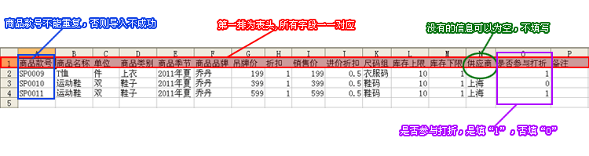
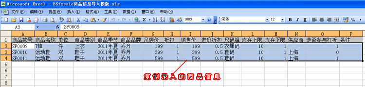
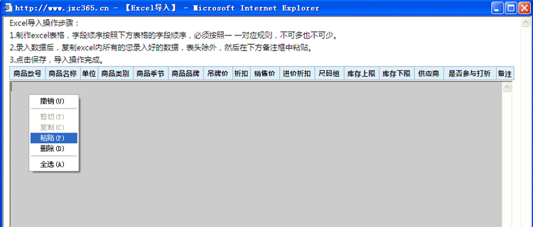
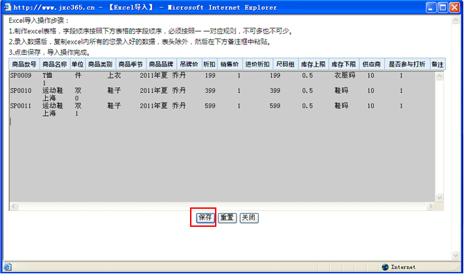
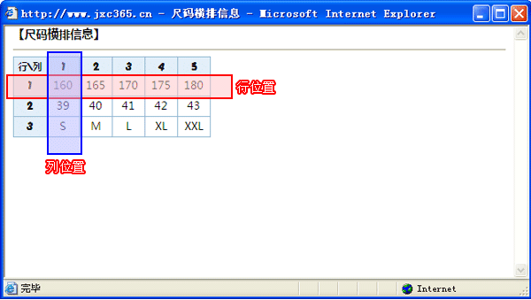
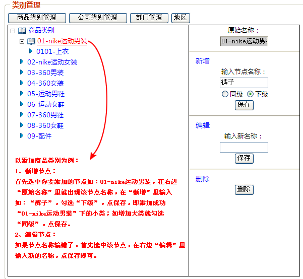
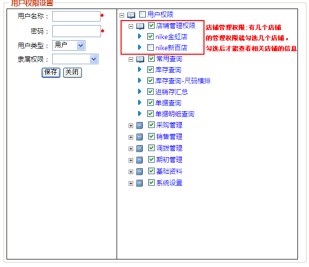

基础资料－帮助文档
新手安装软件后，不知如何使用软件，简单介绍一下，首先必须在基础资料里把相关信息录入完成，添加商品信息后，再做采购进货、销售、调拨等操作。这里就针对一些功能模块的操作细则进行讲解：
- 店铺资料：添加、修改、删除相关店铺信息，自定义设置POS小票显示名称、备注等；
- 商品资料：添加商品信息，首先必须录入商品资料，才能进行采购进货、销售、调拨等操作；可批量Excel导入及导出商品信息；这里重点讲一下如何进行Excel导入商品信息?
Excel导入操作步骤：
1.制作excel表格，字段顺序按照下方表格的字段顺序，必须按照一 一对应规则，不可多也不可少。

2.录入数据后，复制excel内所有的您录入好的数据，表头除外，然后在下方备注框中右键点粘贴。


3.点击保存，提示导入成功，即excel导入操作完成。

- 往来单位：添加往来单位信息，点“添加记录”增加往来单位，也可批量Excel导入及导出往来单位信息；Excel导入方法参见商品信息导入；
- 员工资料：可把需要操作软件的所有员工资料全部录入，以便员工根据自己的用户名及密码登录系统，及设置其相对应的操作权限。
- VIP资料：一个VIP会员对应一个卡号，POS销售时根据会员卡号销售进行积分；
- 颜色资料：添加商品颜色信息；
- 尺码资料：添加商品尺码组及尺码信息。值得注意一点的是：相同的尺码名称应该放在同一个尺码组里，比如：衣服码为：165 170 175 180 ；裤子码也是：165 170 175 180，那么相同的尺码名称就归类在同一个尺码组里，都叫衣服码。添加尺码里的“行位置”和“列位置”按照顺序来填即可，如果不清楚，请点击


- 类别设置：如何新增商品类别？

- 下拉框设置： 下拉框设置请参考类别设置；
系统设置－帮助文档
- 操作员管理：设置店铺管理人员及店员的操作权限；可让管理员查看所有店铺的进货、销售、营业利润等情况，店员只能销售商品，不能查看商品成本价等；点“添加记录”增加用户，把可分配的权限勾选上即可。

- 系统初始化：即把数据清空，一般最好不要做这个操作，数据清空后不能恢复。把
 点开，勾选要清除的选项，点数据初始化即可。
点开，勾选要清除的选项，点数据初始化即可。
- 修改密码：修改最高权限，超级管理员admin的密码
- 数据备份：使用FTP软件登录FTP站点，进行数据的备份与还原。建议每周备份一次以上，以确保数据的安全、完整。
- 选项设置：小数点位数设置；每页显示记录数；单据打印显示行数。
- 操作日志：软件使用情况明细。
- 公司概况：可修改成自已相关的公司信息。
期初管理－帮助文档
- 新增期初录入：点“增行”按钮添加期初的商品数量。
- 期初Excel导入：Excel导入方法请参见基础资料-商品资料的Excel导入。
- 期初单管理：对添加的期初单据进行修改、删除等操作；点“尺码横排”可进行页面设置、打印单据、导出Excel等。
- 期初明细查询：对期初商品明细的修改、删除。
采购管理－帮助文档
- 新增进货单：点"增行"进行进货操作，可直接进货也可条码扫描进货；进货库存自动增加；进货价可精确到分；
- 新增退货单：点"增行"进行退货操作，可直接退货；退货库存自动减少，以负数表示；退货价可精确到元；
- 采购单管理：对采购单据进行修改、删除；点“尺码横排”可进行页面设置、打印单据、导出Excel等操作；根据单据日期，店铺名称进行查询等。
- 采购明细查询：根据商品类别、款号等查询采购单据明细，进行修改、删除等操作。
销售管理－帮助文档
- 新增销售单：点“增行”，可直接销售，也可点“条码扫描”进行POS销售，销售价格四舍五入到元；结账收款分现金与银行卡二种收款方式；这里要特别注意一点的是，比如某商品入库到A店铺，只能在A店铺进行销售，在别的店铺就不能进行销售。
- 新增销售退货单：“销售退货”的操作方法与“新增销售单”一样，可直接销售退货，也可点“条码扫描”进行销售退货，销售退货价格四舍五入到元。
- 销售单管理：对销售单据进行修改、删除；点“尺码横排”可进行页面设置、打印单据、导出Excel等操作；根据单据日期，店铺名称进行查询等。
- 销售明细查询：根据商品类别、款号等查询销售单据明细，进行修改、删除等操作。
调拨管理－帮助文档
- 新增调拨单：选择“调出店铺”及“调入店铺”，点“新增”或者“条码扫描”制作调拨单，相对应的调出、调入店铺库存会减少、增加。
- 调拨单管理：对调拨单据进行修改、删除；点“尺码横排”可进行页面设置、打印单据、导出Excel等操作；根据单据日期，店铺名称进行查询等。
- 调拨明细查询：根据商品类别、款号等查询调拨单据明细，进行修改、删除等操作。